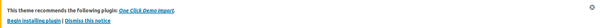

After activating theme, you may want to try out how the your site would look like with the theme. To make your site look like our demo, follow as below:
- In your admin panel, you will see a notice as below:

- Install and activate One Click Demo Import plugin as shown in the notice.
- Then go to Appearance->Import Demo Data
- Click Import Demo Data button.
(Note: It may take few minutes to import the data. Also for best result(images), make sure you are connected to the internet.)